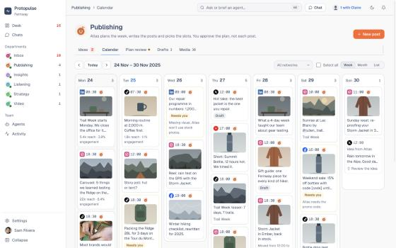
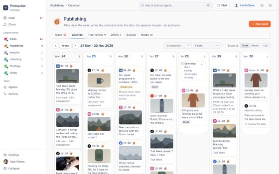
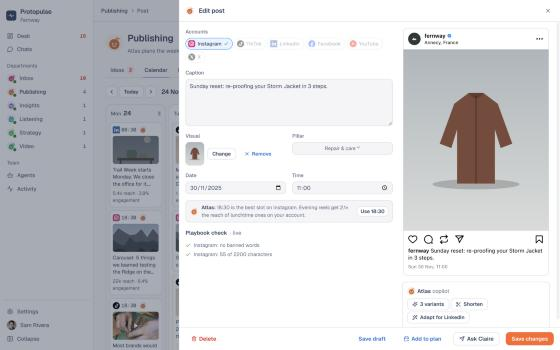
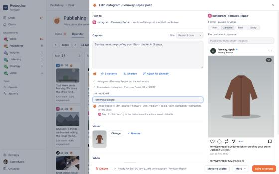
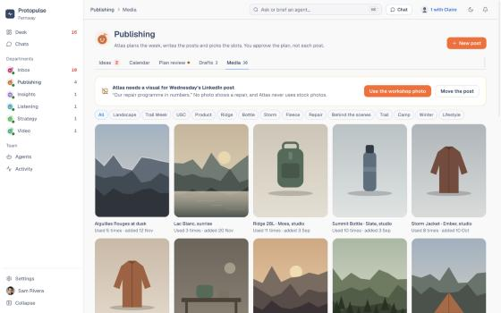
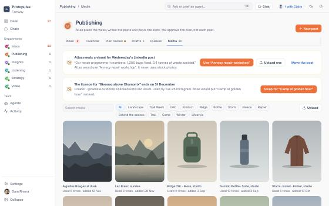

Atlas, publishing: agent depth
Session of 25 November 2026. Publishing now works like Agorapulse’s, agentic-first: Atlas fills, places, checks and repairs, and Sam approves plans and batches, not posts one by one. Every action Atlas takes on Act has a journal line and a real Undo; every guardrail on its profile is applied. Backlog: design-plans/agent-depth/atlas-backlog.md, decisions: atlas-log.md.
Parity, before and after
Each capability answers the seven agentic-first questions in code; the PR body holds the grid.
| Capability | Before | After | PR |
|---|---|---|---|
| Plan on Act, Undo | Approved on Act, but Undo left the 14 posts in the calendar | Undo of any Atlas card restores what it changed (posts, ideas, plan) through a per-card snapshot | #24 |
| New plan after a rejection | “Ask Atlas for a new plan” brought back the same items | A real v2: Atlas’s 10 posts swapped, Trail Week kept, diff shown | #24 |
| Missing visual | Act resolved nothing; banner hard-coded; no upload | On Act Atlas picks a library photo with rights and says which; Upload in Media; one banner per waiting post | #32 |
| Failed posts (Agorapulse: Failed, Retry now) | “X rejected a post” had no post; options did nothing | Post turns Failed with the cause; Retry now / without the link / skip; safe retry on Act; needs-you badge | #40 |
| Best time to publish | “Move to a better slot” (Act, 41 reviews) had no code | Same-day move in Suggest, Draft and Act, reason from Iris’s best time, Undo | #47 |
| Composer copilot | Variants fixed on GR20 / Chamonix | Built from the text, the pillar and the Playbook, with the rule applied | #67 |
| Guardrails (3 a day, pause in a crisis) | Shown on the profile, applied in Ideas only | 3 per profile per day everywhere; posts of the next 24 h Paused during a critical alert, resumed after | #71 |
| Approval (To approve) | Ask Claire only put the post in Needs you | To approve status, Claire’s answer acts on the post, comments, pricing escalation routes posts to her, “Send Friday’s post to Claire” | #75 |
| Per network: format, first comment | One caption, text-only variants | Format and first comment per network, pre-filled by Atlas; “Add a first comment with the size guide link” | #78 |
| Queues | None | Tuesday tips and Sunday repair, editable slots, Atlas fills two weeks ahead; “Fill next week’s Tips slots” | #81 |
| Requests from Echo, Iris, Juno, Sage | 5 open | Best time read from Iris, receive/withdraw posts, hold/release, publish when due, competitors from Listening | #84 |
| Published post results | Raw reach and engagement | Against the network median, Atlas’s reading, Recycle it into Ideas, link to Insights | #89 |
| Labels and calendar filters | labels unused; network filter only | Atlas labels campaign and queue posts; edit one or many; Filters by status, label, campaign, pillar, author, profile | #92 |
| Link tracking (UTM) | link unused | UTM by convention, short link, plain link on X, first comment on Instagram; clicks requested from Iris | #97 |
| Calendar notes | None | Day notes; a quiet day keeps Atlas from scheduling and moves what’s on it (Act) or asks | #98 |
| Library (Assets) | Read-only, tag filter | Search, editable tags, Atlas tags uploads, creator licences ending soon get a swap | #107 |
| Several profiles per network | One account per network | Instagram · Fernway Repair, routing of repair posts, profile groups, cap per profile; requests to Nova, Iris, Sage | #110 |
| Requests from Juno and Sage | 3 open | Clip versions in previews, Sage’s moments in the calendar, open pillars | #112 |
Calendar


Post editor


Media


Checks
- Done
npm testandnpm run buildgreen on every PR and onmainafter each merge (checked in a clean worktree ofmain); PR CI green before each merge. - Done
Each Atlas action in its three levels, under test: plan, better slot, fill (slots, queues, visuals, licences), retry, plus the routing that ignores levels (pricing escalation, guardrails).
- Done
Guardrails applied: 3 per profile per day, pause during a critical alert, no stock and no lapsed licence, quiet days.
- Done
1440 and 375 (no horizontal scroll on Calendar, Queues, Media, the editor), light and dark from tokens.
- Done
Contracts both ways: reads Iris’s
bestTime, Sage’stargetsOfandthemesOf, Echo’s competitors, Juno’sversionOf; exposesreceivePosts/withdrawPosts,holdToday/releaseToday,publishDue,ACCOUNTS.
Still open
Later at pitch
Hour-slot drag and drop and drop in month view, CSV import, time zones. Simpler versions built for queues (no queue creation), notes (launch note doesn’t trigger an idea), the library (no folders), the per-network editor (no TikTok and YouTube settings).
Waiting on other agents
Iris: link clicks, per-profile numbers, best slot per weekday. Nova: Fernway Repair in the Inbox. Sage: Fernway Repair’s cadence and
pillarBase. Echo: the spike log line that still says today’s posts stay scheduled.Scripted simplifications
One failure cause (X refusing a short link); a 4-entry text pool per queue; Claire’s answers drawn from the shared script.